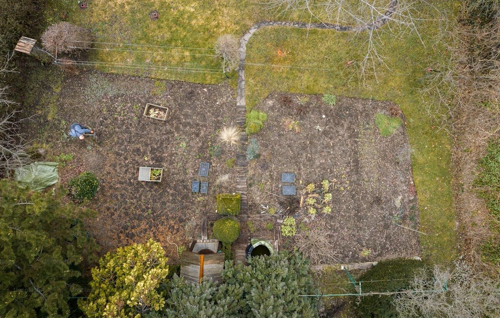
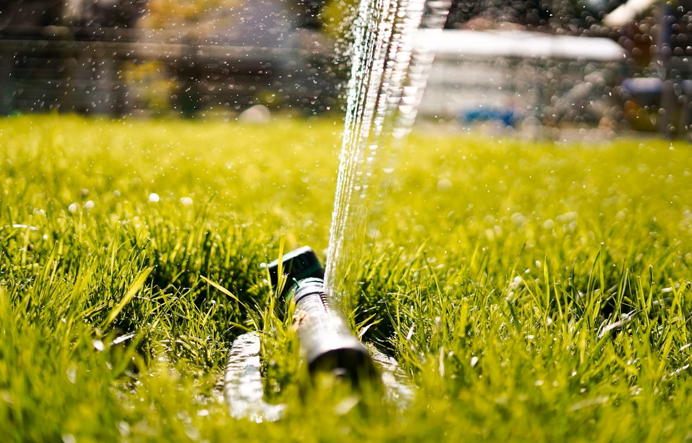
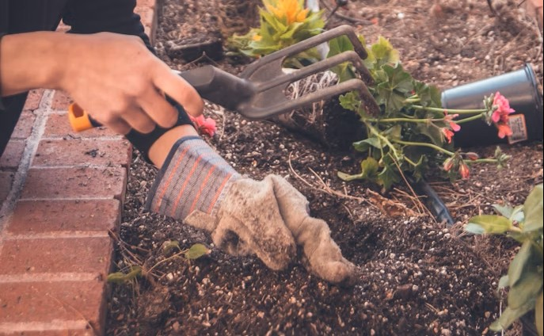
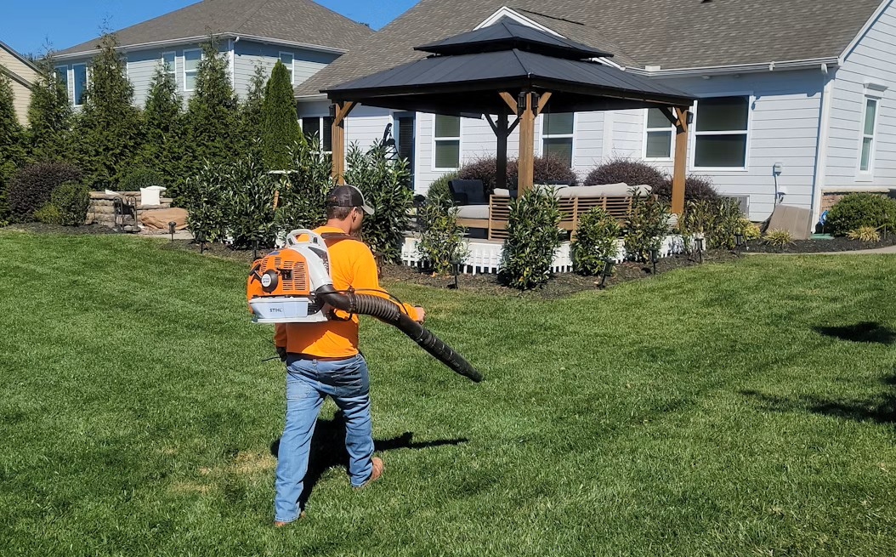

Services
Garden Design Packages
- Sprout Plan; On-site consultation
- Basic layout plan (front or back yard), plant selection guide (native & low-water species).
- $250
- Growth Plan; Full-yard design
- (Front & back), custom planting plan, soil and irrigation recommendations, 3D concept images.
- $750
- Bloom Plan; Full-yard design
- sourcing & coordinating plant delivery, design adjustments post-installation, one follow-up maintenance visit.
- $1,200

Lawn Installation & Maintenance
- Sod Installation
- Preparation, soil amendment, sod laying, first watering, starter care instructions.
- $2.50–$4.50 per sq. ft.
- Native Grass Seeding
- Eco-conscious seeding blend, soil prep, slow-release fertilizer.
- $1,000–$1,500 per yard (typical residential lot)
- Monthly Maintenance
- Mowing, edging, organic fertilization, weed control.
- $150–$250/month

Eco-Irrigation Systems
- Basic Drip System
- Drip irrigation for gardens, programmable timer.
- $850
- Smart Yard System
- Drip & micro-sprinklers, app-controlled water schedule, rain sensor.
- $1,500
- Rain Harvest Integration
- Smart system plus rainwater catchment barrels and filtration.
- $2,200

Seasonal Clean up & Care
- Spring Prep
- Leaf & debris removal, bed prep, pruning, first fertilization.
- $200-$450
- Fall Ready
- Leaf & debris removal, perennial cutbacks, winter fertilizer.
- $200-$450
- Storm Recovery
- Branch & debris clearing, lawn recovery treatments.
- Starting at $150

Specialty Add-ons
- Patio planters & decorative pots
- Selection, planting, placement
- $50-$200 each
- Pollinator garden installation
- Bee & butterfly-friendly plants, signage.
- $300-$700
- Low-voltage garden lighting
- Path & accent lights, timer or solar powered.
- $400-$1,000

Discounts & Bundles
- 10% off when booking both design and installation together.
- Loyalty Maintenance Plan: Book 12 months of maintenance, get 1 month free.
- Free Estimates — Every new project starts with a free on-site consultation.